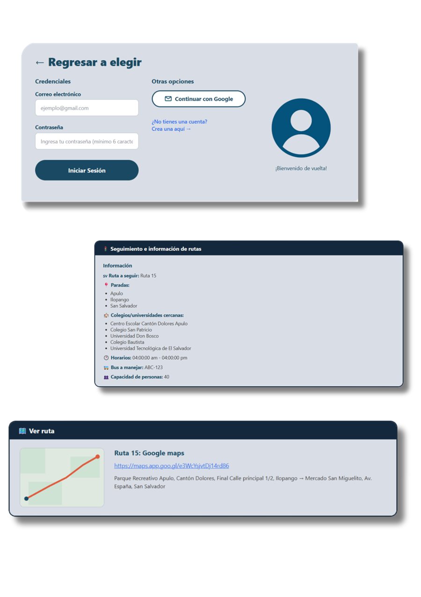

Regresar a elegir
Guía para conductores:
- Inicia sesión como conductor
- Consulta tu ruta asignada
- Revisa las paradas en los detalles de las rutas
- Consulta los horarios
- Realiza tu recorrido
¿Tienes problemas?
Contacta a soporte →


Guía para conductores:
¿Tienes problemas?
Contacta a soporte →
